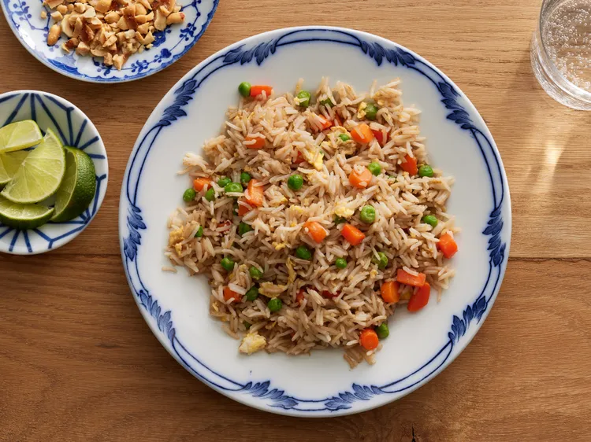

Fried rice is a popular Asian dish of cooked rice stir-fried in a wok or pan with other ingredients like eggs, vegetables, and meat or seafood, seasoned with soy sauce for flavor and color
ingredients
Instructions
Assemble ingredients.
Place carrots in a small saucepan and cover with water. Bring to a low boil and cook for 3 to 5 minutes. Stir in peas, then immediately drain in a colander.
Heat a wok over high heat. Pour in vegetable oil, then stir in carrots, peas, and garlic; cook for about 30 seconds. Add eggs; stir quickly to scramble eggs with vegetables.
Stir in cooked rice. Add soy sauce and toss rice to coat. Drizzle with sesame oil and toss again.
Serve hot and enjoy!
